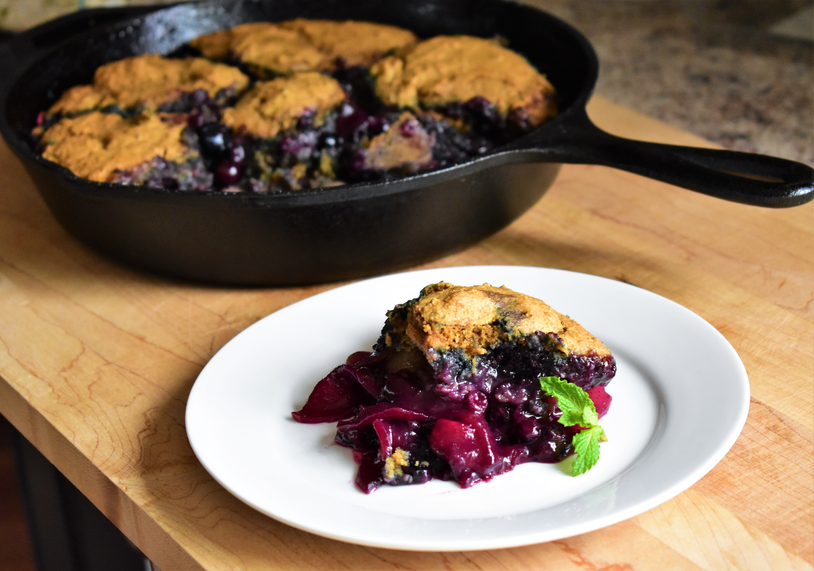

Apple-Blueberry Cobbler

Description
This recipe was inspired by camping trips I used to take with my family when I was younger. Originally,
this cobbler was made using huckleberries, and baked over a campfire; but since I no longer live in
an area where I can get huckleberries and don't have a constant campfire going, I substituted frozen
wild blueberries and baked it in the oven instead. I also use a homemade apple beer in the batter,
but use whatever hard cider or fruity beer you like.
Ingredients
Filling:
- 4 Gala apples - peeled, cored, and cut into 1/16-inch slices
- 2 cups frozen wild blueberries
- ⅓ cup maple syrup
- 1 tablespoon cornstarch
- 1 lemon, juiced
- ½ teaspoon ground cinnamon
- ½ teaspoon kosher salt
- ¼ teaspoon ground nutmeg
Topping:
- ½ cup maple syrup
- ¼ cup unsalted butter, melted
- ½ teaspoon vanilla extract
- 1½ cups whole wheat flour
- 1 teaspoon baking powder
- 1 teaspoon baking soda
- ½ teaspoon kosher salt
- 1 cup hard apple cider
Steps
- Preheat the oven to 350 degrees F (175 degrees C). Grease a 10-inch cast iron skillet.
- Mix apples, blueberries, maple syrup, cornstarch, lemon juice, cinnamon, kosher salt, and nutmeg
together in a large bowl. Toss to thoroughly combine. Pour into the prepared skillet.
- Stir maple syrup, melted butter, and vanilla extract together in a large bowl. Add flour, baking powder
, baking soda, and kosher salt; stir until crumbly. Pour in cider and stir until just combined. Place
dollops of batter over apple-berry mixture.
- Bake in the preheated oven until biscuit topping is cooked through and fruit is bubbly, about 45 minutes.